This notebook estimates growth rates by fitting non-parametric splines using the really nice growthrates package. AUC is esimated using the DescTools package.
1 Setup
Load required packages
Show/hide code
library(here)
here() starts at /home/shane/Documents/projects/experiments/hogle_lab/hambiEvoVEnv
── Conflicts ────────────────────────────────────────── tidyverse_conflicts() ──
✖ dplyr::filter() masks stats::filter()
✖ dplyr::lag() masks stats::lag()
ℹ Use the conflicted package (<http://conflicted.r-lib.org/>) to force all conflicts to become errors
gcurves_thin_sm <- gcurves_thin_sm %>%# make uniq idmutate(id =paste0(plate, "|", well))
Smoothing splines are a quick method to estimate maximum growth. The method is called nonparametric, because the growth rate is directly estimated from the smoothed data without being restricted to a specific model formula.
The method was inspired by an algorithm of Kahm et al. (2010), with different settings and assumptions. In the moment, spline fitting is always done with log-transformed data, assuming exponential growth at the time point of the maximum of the first derivative of the spline fit. All the hard work is done by function smooth.spline from package stats, that is highly user configurable. Normally, smoothness is automatically determined via cross-validation. This works well in many cases, whereas manual adjustment is required otherwise, e.g. by setting spar to a fixed value [0, 1] that also disables cross-validation.
many_spline_xy <- purrr::map(many_spline@fits, \(x) data.frame(x = x@xy[1], y = x@xy[2])) %>% purrr::list_rbind(names_to ="id")many_spline_fitted <- purrr::map(many_spline@fits, \(x) data.frame(x@FUN(x@obs$time, x@par))) %>% purrr::list_rbind(names_to ="id") %>% dplyr::rename(hours = time, predicted = y) %>% dplyr::left_join(gcurves_thin_sm, by = dplyr::join_by(id, hours)) %>% dplyr::group_by(id) %>%# this step makes sure we don't plot fits that go outside the range of the data dplyr::mutate(predicted = dplyr::if_else(dplyr::between( predicted, min(OD600_smooth_avg), max(OD600_smooth_avg *1.5) ), predicted, NA_real_)) %>% dplyr::ungroup()
4 AUC estimate
Calculates AUC using DescTools package. The method empolyed is a simple trapezoid rule, where the growth curve is formed by connecting all points by a direct line (composite trapezoid rule).
many_spline_res %>% dplyr::left_join(dplyr::distinct(dplyr::select(gcurves_thin_sm, id, plate, well)), by =join_by(id)) %>% dplyr::select(-id) %>% dplyr::relocate(y0:r2, .after="well") %>%left_join(many_auc_res, by =join_by(plate, well)) %>% readr::write_tsv(here::here(data_stp_cl, "auc_mumax_results.tsv"))
6 Plot growth rate estimates
Here we will manually inspect the different growth curves. We will compile a list of the worst curves with the strangest features to exclude from downstream analysis (into a blacklist file).
The subscripts at the ends of the plate contain information:
The _1 subscript is the “bact” condition with no additional treatment
The _2 subscript is the “bact_pred” condition which is a ciliate predator treatment
The _3 subscript is the “bact_strep” condition which has streptomycin
The _4 subscript is the “bact_pred_strep” condition which has both streptomycin and ciliates present
6.1 Bact conditions
6.1.1 Plate 1
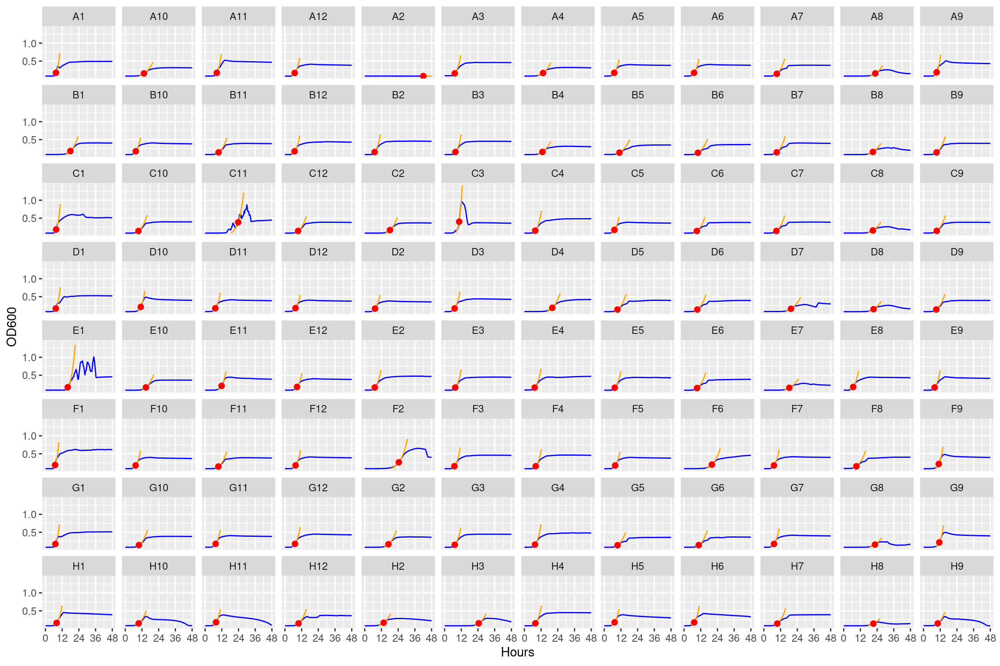
Figure 1: Growth curves for the bacteria only conditions on Plate 1. Blue line is smoothed with a moving average window of 5 points. Orange is slope of max predicted growth rate from the first derivative of a smoothing spline. Red dot is hours and OD600 at which maximum growth rate is reached.
6.1.2 Plate 2
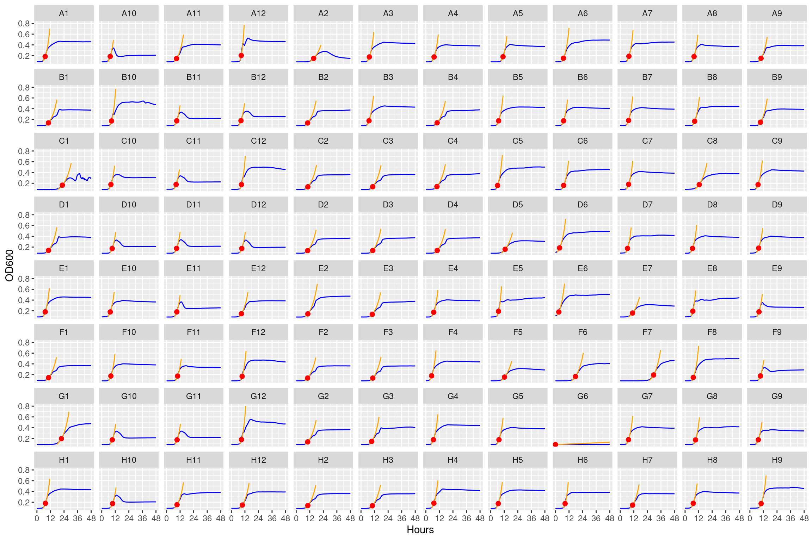
Figure 2: Growth curves for the bacteria only conditions on Plate 2. Blue line is smoothed with a moving average window of 5 points. Orange is slope of max predicted growth rate from the first derivative of a smoothing spline. Red dot is hours and OD600 at which maximum growth rate is reached.
6.1.3 Plate 3
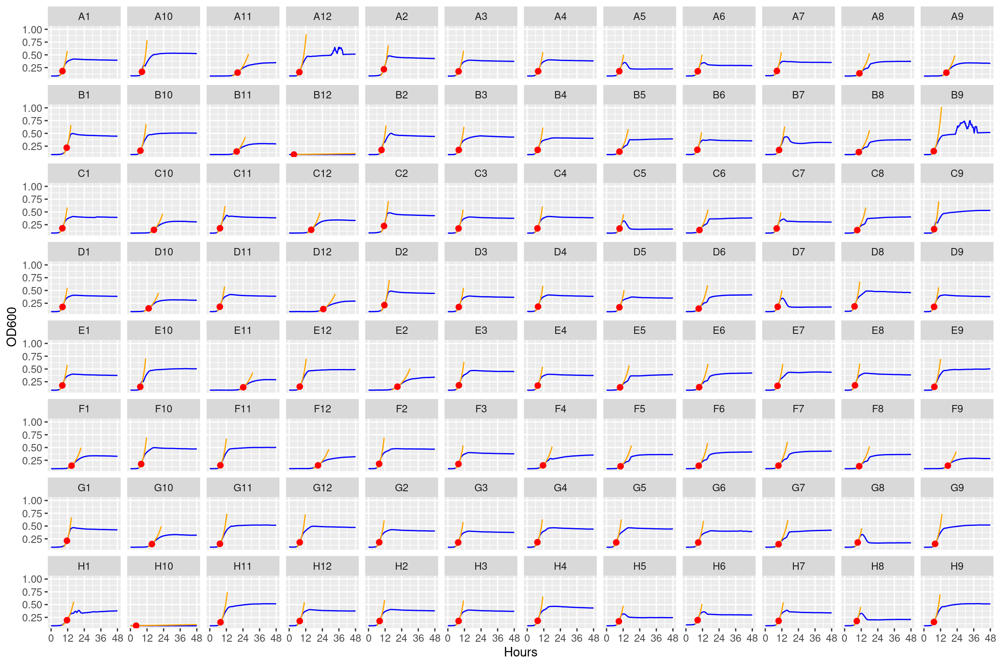
Figure 3: Growth curves for the bacteria only conditions on Plate 3. Blue line is smoothed with a moving average window of 5 points. Orange is slope of max predicted growth rate from the first derivative of a smoothing spline. Red dot is hours and OD600 at which maximum growth rate is reached.
6.1.4 Plate 4
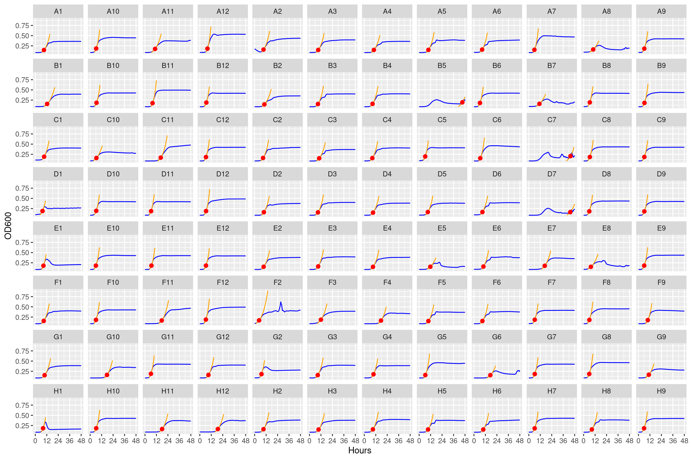
Figure 4: Growth curves for the bacteria only conditions on Plate 4. Blue line is smoothed with a moving average window of 5 points. Orange is slope of max predicted growth rate from the first derivative of a smoothing spline. Red dot is hours and OD600 at which maximum growth rate is reached.
6.1.5 Plate 5
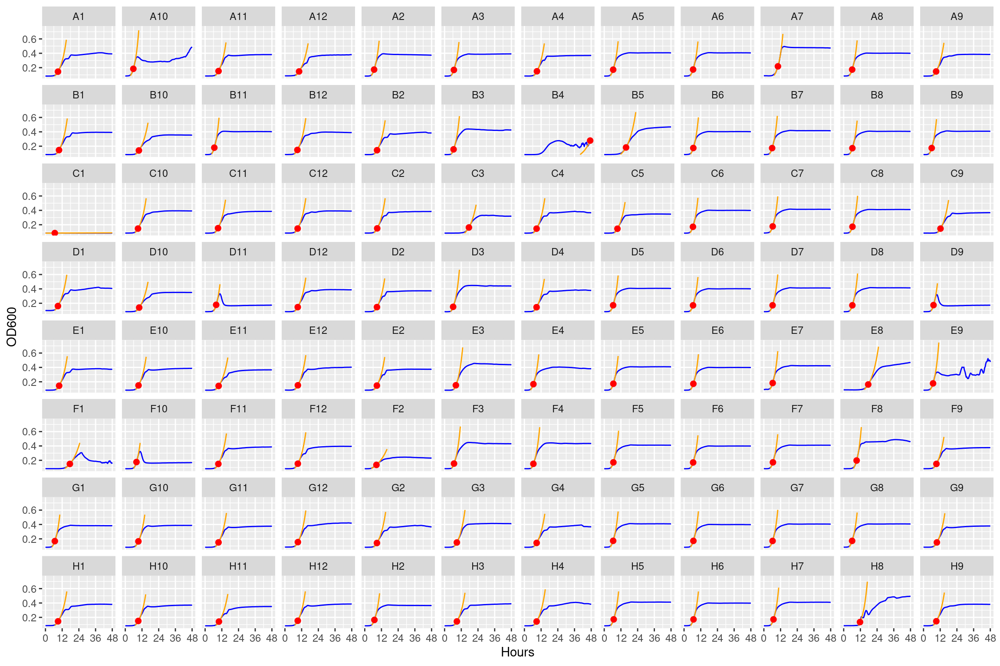
Figure 5: Growth curves for bacteria only conditions on Plate 5. Blue line is smoothed with a moving average window of 5 points. Orange is slope of max predicted growth rate from the first derivative of a smoothing spline. Red dot is hours and OD600 at which maximum growth rate is reached.
6.1.6 Plate 6
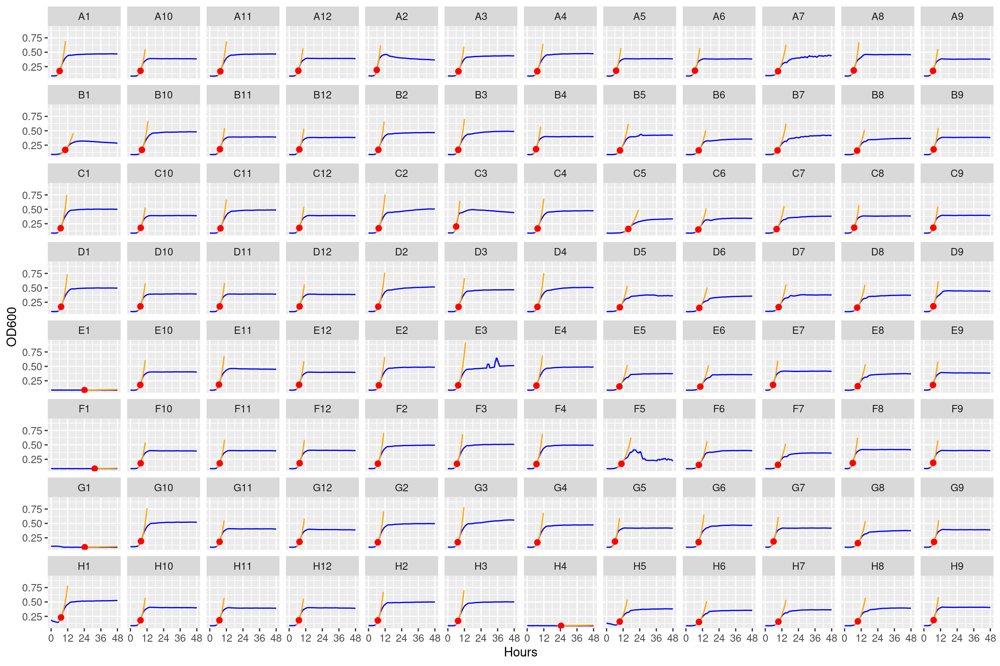
Figure 6: Growth curves for bacteria only conditions on Plate 6. Blue line is smoothed with a moving average window of 5 points. Orange is slope of max predicted growth rate from the first derivative of a smoothing spline. Red dot is hours and OD600 at which maximum growth rate is reached.
6.1.7 Plate 7
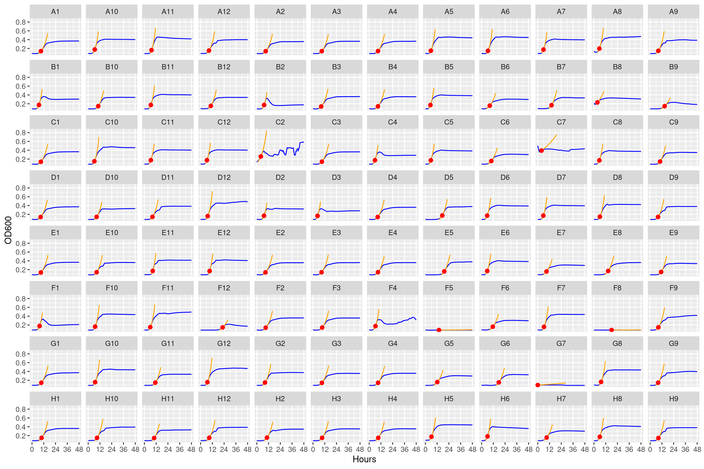
Figure 7: Growth curves for bacteria only conditions on Plate 7. Blue line is smoothed with a moving average window of 5 points. Orange is slope of max predicted growth rate from the first derivative of a smoothing spline. Red dot is hours and OD600 at which maximum growth rate is reached.
6.1.8 Plate 8
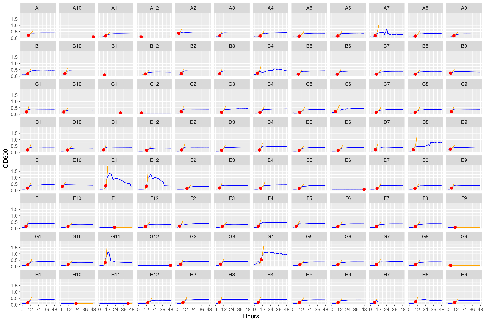
Figure 8: Growth curves for bacteria only conditions on Plate 8. Blue line is smoothed with a moving average window of 5 points. Orange is slope of max predicted growth rate from the first derivative of a smoothing spline. Red dot is hours and OD600 at which maximum growth rate is reached.
6.2 Predator conditions
6.2.1 Plate 1
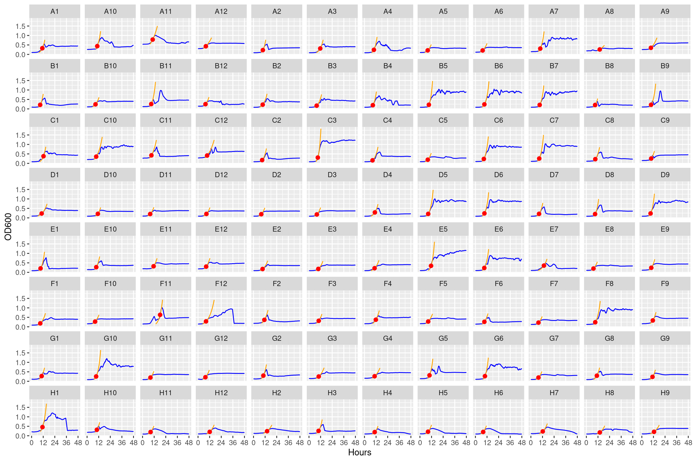
Figure 9: Growth curves for the ciliate conditions on Plate 1. Blue line is smoothed with a moving average window of 5 points. Orange is slope of max predicted growth rate from the first derivative of a smoothing spline. Red dot is hours and OD600 at which maximum growth rate is reached.
6.2.2 Plate 2
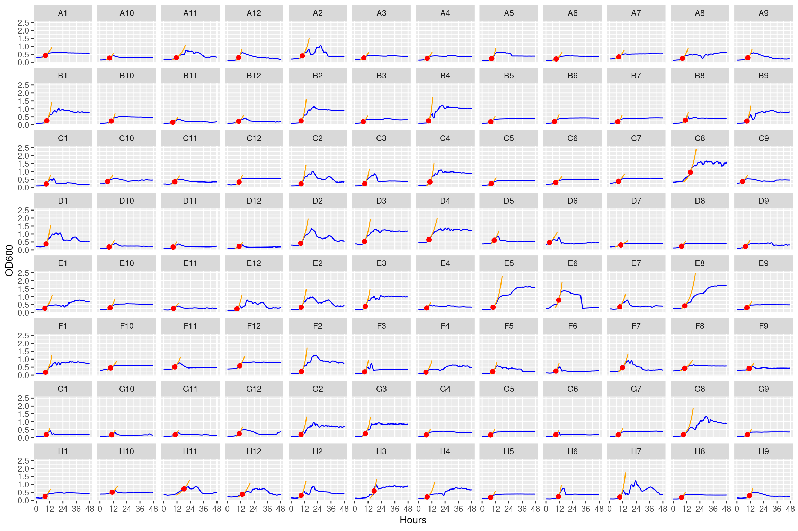
Figure 10: Growth curves for the ciliate conditions on Plate 2. Blue line is smoothed with a moving average window of 5 points. Orange is slope of max predicted growth rate from the first derivative of a smoothing spline. Red dot is hours and OD600 at which maximum growth rate is reached.
6.2.3 Plate 3
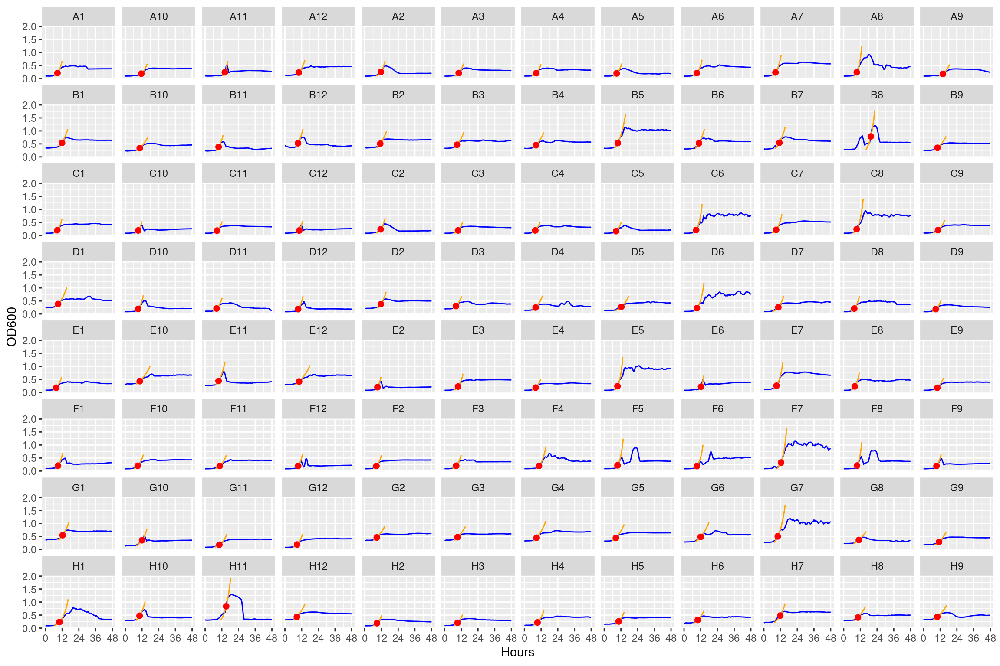
Figure 11: Growth curves for the ciliate conditions on Plate 3. Blue line is smoothed with a moving average window of 5 points. Orange is slope of max predicted growth rate from the first derivative of a smoothing spline. Red dot is hours and OD600 at which maximum growth rate is reached.
6.2.4 Plate 4
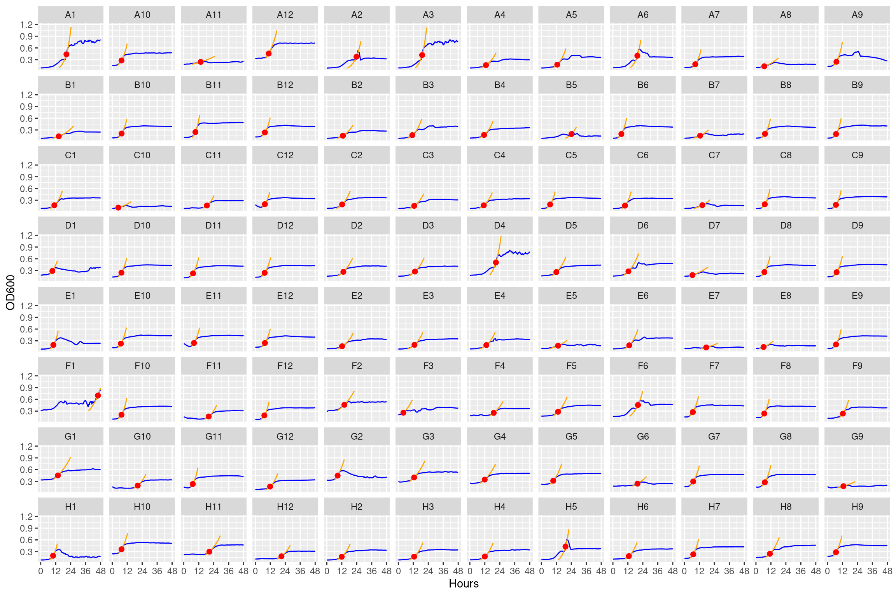
Figure 12: Growth curves for the ciliate conditions on Plate 4. Blue line is smoothed with a moving average window of 5 points. Orange is slope of max predicted growth rate from the first derivative of a smoothing spline. Red dot is hours and OD600 at which maximum growth rate is reached.
6.2.5 Plate 5
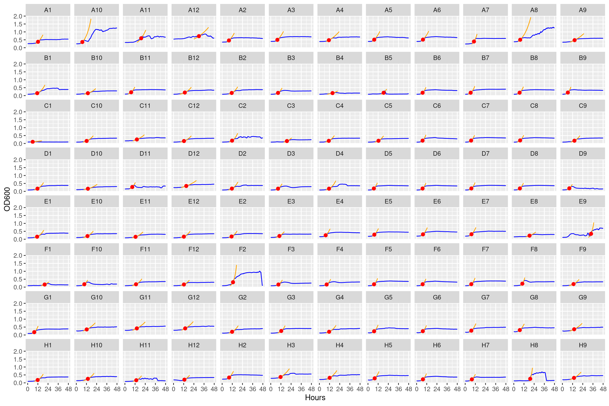
Figure 13: Growth curves for ciliate conditions on Plate 5. Blue line is smoothed with a moving average window of 5 points. Orange is slope of max predicted growth rate from the first derivative of a smoothing spline. Red dot is hours and OD600 at which maximum growth rate is reached.
6.2.6 Plate 6
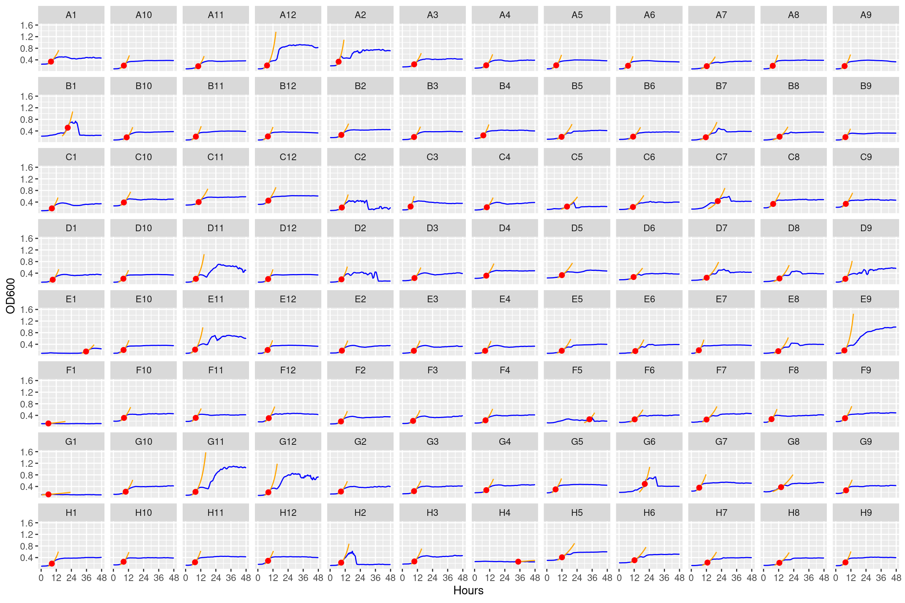
Figure 14: Growth curves for ciliate conditions on Plate 6. Blue line is smoothed with a moving average window of 5 points. Orange is slope of max predicted growth rate from the first derivative of a smoothing spline. Red dot is hours and OD600 at which maximum growth rate is reached.
6.2.7 Plate 7
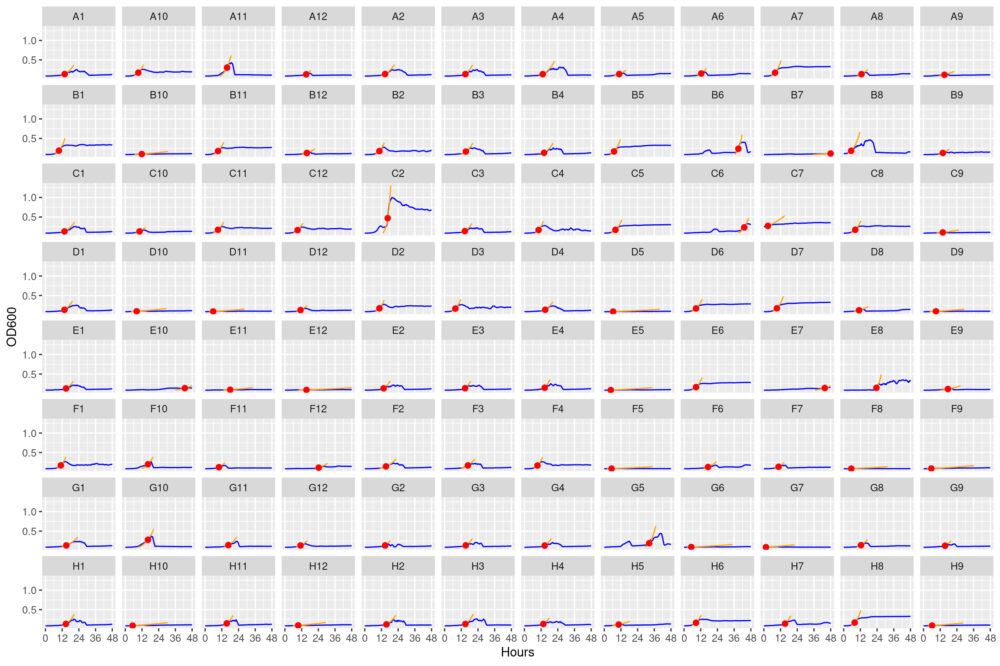
Figure 15: Growth curves for ciliate conditions on Plate 7. Blue line is smoothed with a moving average window of 5 points. Orange is slope of max predicted growth rate from the first derivative of a smoothing spline. Red dot is hours and OD600 at which maximum growth rate is reached.
6.2.8 Plate 8
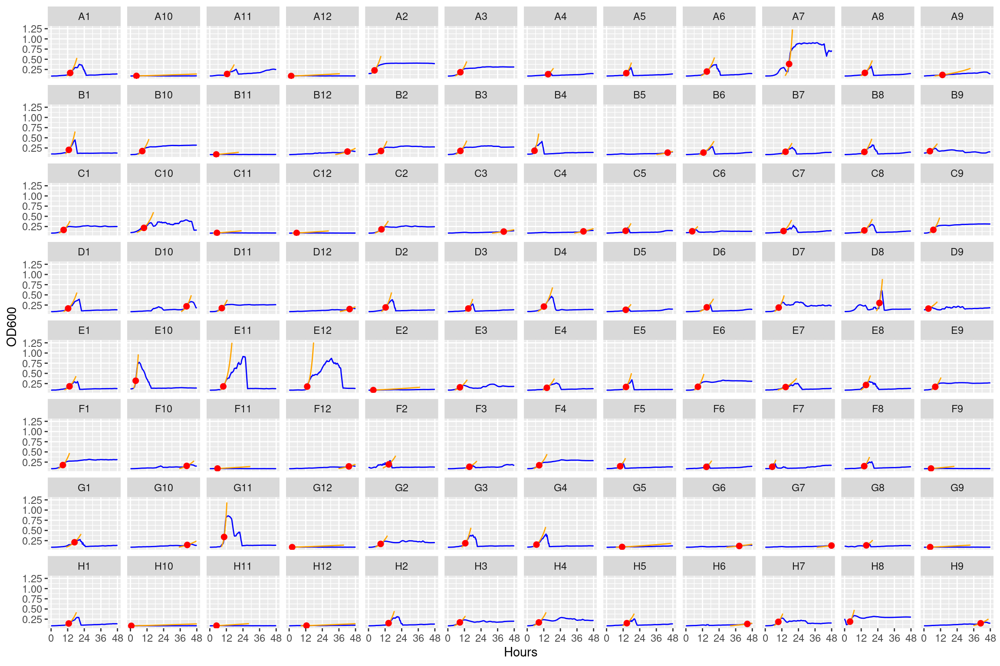
Figure 16: Growth curves for ciliate conditions on Plate 8. Blue line is smoothed with a moving average window of 5 points. Orange is slope of max predicted growth rate from the first derivative of a smoothing spline. Red dot is hours and OD600 at which maximum growth rate is reached.
6.3 Streptomycin conditions
6.3.1 Plate 1
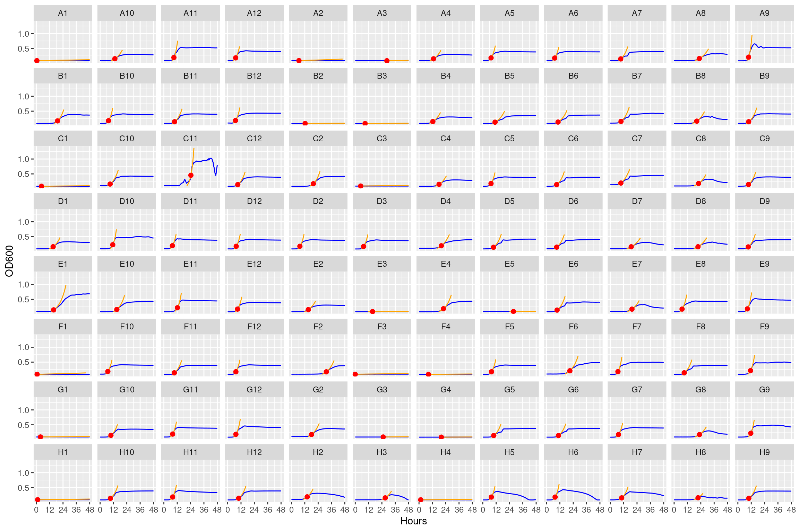
Figure 17: Growth curves for the Streptomycin conditions on Plate 1. Blue line is smoothed with a moving average window of 5 points. Orange is slope of max predicted growth rate from the first derivative of a smoothing spline. Red dot is hours and OD600 at which maximum growth rate is reached.
6.3.2 Plate 2
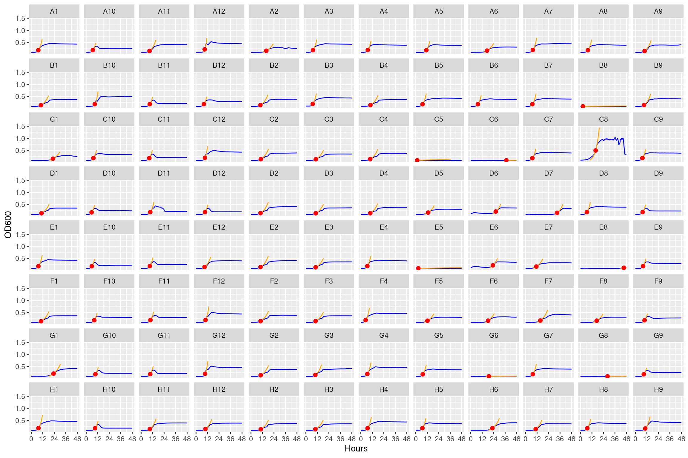
Figure 18: Growth curves for the Streptomycin conditions on Plate 2. Blue line is smoothed with a moving average window of 5 points. Orange is slope of max predicted growth rate from the first derivative of a smoothing spline. Red dot is hours and OD600 at which maximum growth rate is reached.
6.3.3 Plate 3
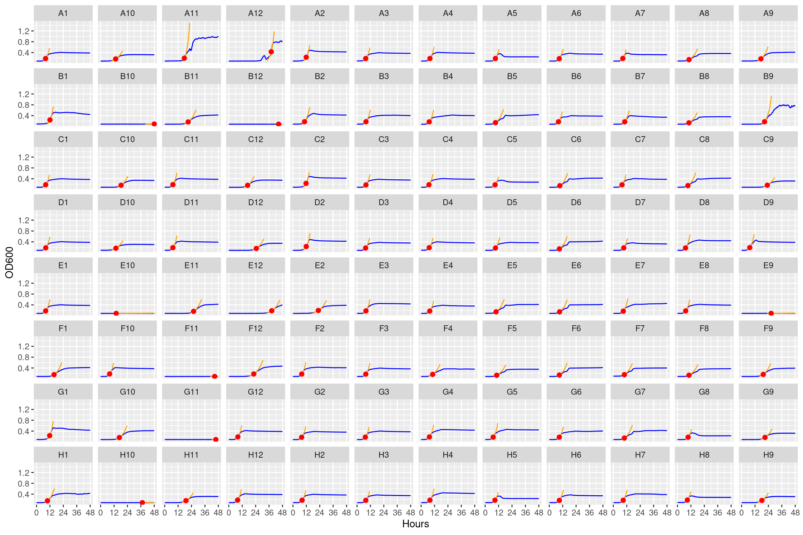
Figure 19: Growth curves for the Streptomycin conditions on Plate 3. Blue line is smoothed with a moving average window of 5 points. Orange is slope of max predicted growth rate from the first derivative of a smoothing spline. Red dot is hours and OD600 at which maximum growth rate is reached.
6.3.4 Plate 4
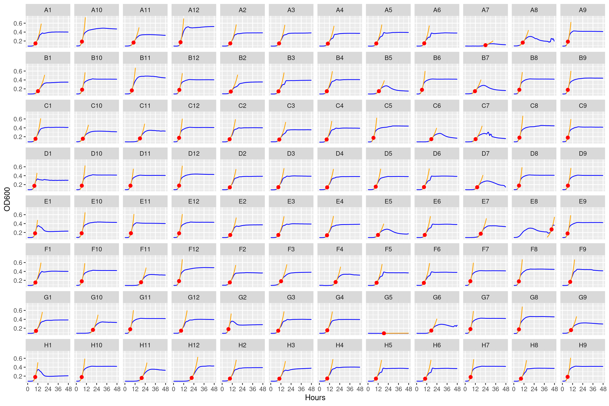
Figure 20: Growth curves for the Streptomycin conditions on Plate 4. Blue line is smoothed with a moving average window of 5 points. Orange is slope of max predicted growth rate from the first derivative of a smoothing spline. Red dot is hours and OD600 at which maximum growth rate is reached.
6.3.5 Plate 5
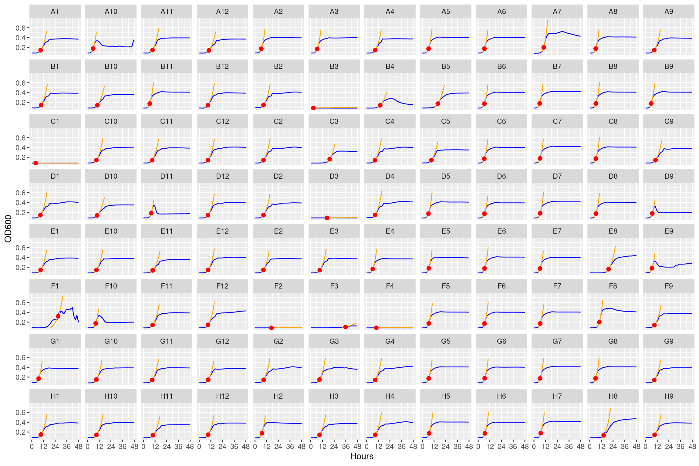
Figure 21: Growth curves for Streptomycin conditions on Plate 5. Blue line is smoothed with a moving average window of 5 points. Orange is slope of max predicted growth rate from the first derivative of a smoothing spline. Red dot is hours and OD600 at which maximum growth rate is reached.
6.3.6 Plate 6
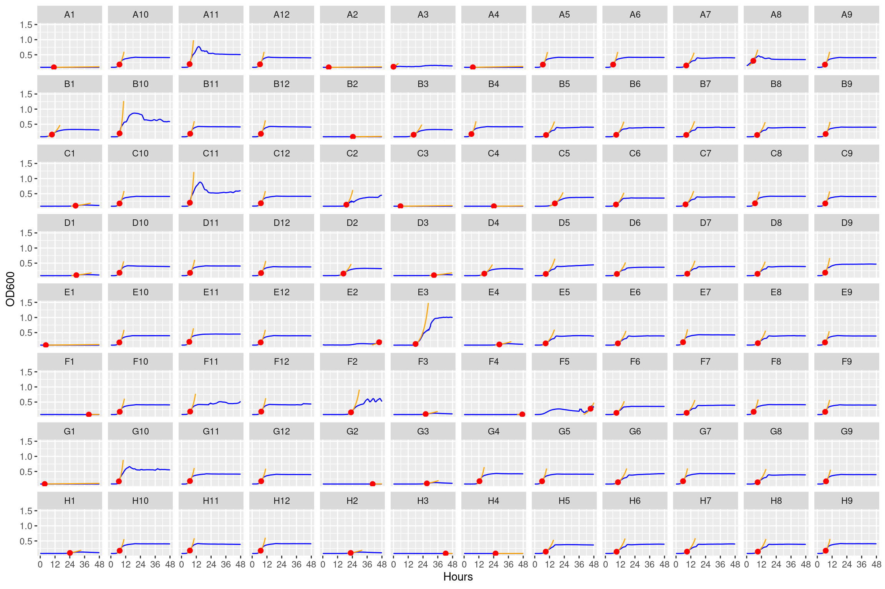
Figure 22: Growth curves for Streptomycin conditions on Plate 6. Blue line is smoothed with a moving average window of 5 points. Orange is slope of max predicted growth rate from the first derivative of a smoothing spline. Red dot is hours and OD600 at which maximum growth rate is reached.
6.3.7 Plate 7
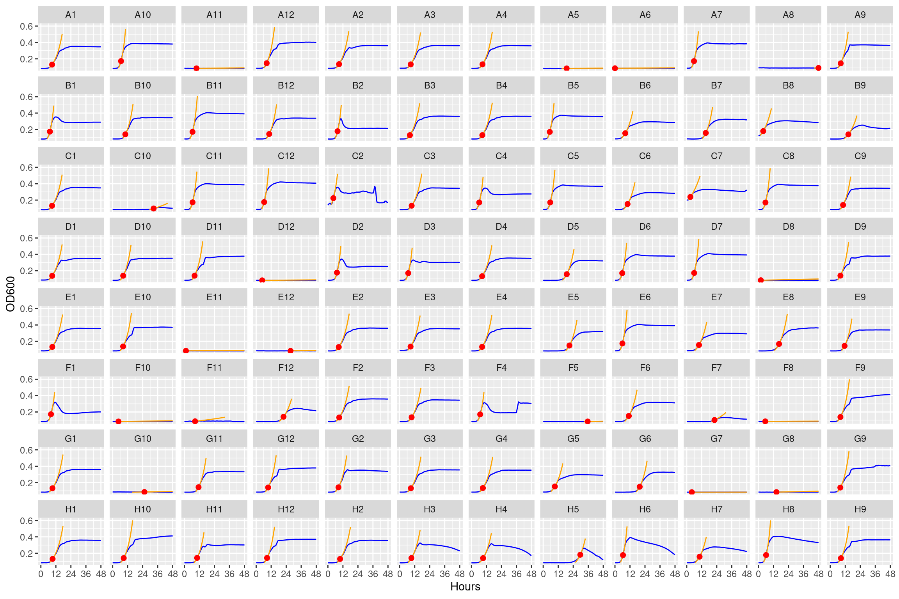
Figure 23: Growth curves for Streptomycin conditions on Plate 7. Blue line is smoothed with a moving average window of 5 points. Orange is slope of max predicted growth rate from the first derivative of a smoothing spline. Red dot is hours and OD600 at which maximum growth rate is reached.
6.3.8 Plate 8
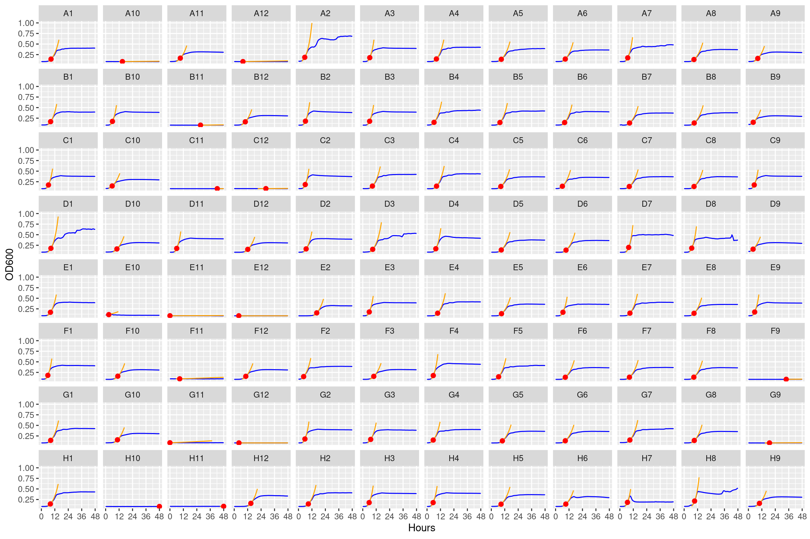
Figure 24: Growth curves for Streptomycin conditions on Plate 8. Blue line is smoothed with a moving average window of 5 points. Orange is slope of max predicted growth rate from the first derivative of a smoothing spline. Red dot is hours and OD600 at which maximum growth rate is reached.
6.4 Predator + Streptomycin conditions
6.4.1 Plate 1
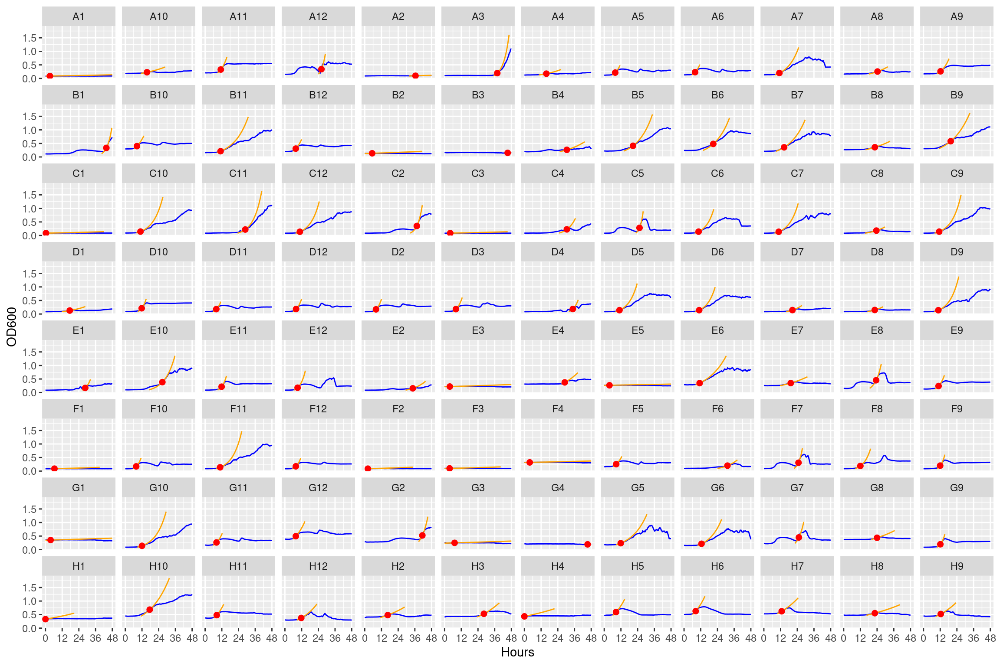
Figure 25: Growth curves for the Ciliate + Streptomycin conditions on Plate 1. Blue line is smoothed with a moving average window of 5 points. Orange is slope of max predicted growth rate from the first derivative of a smoothing spline. Red dot is hours and OD600 at which maximum growth rate is reached.
6.4.2 Plate 2
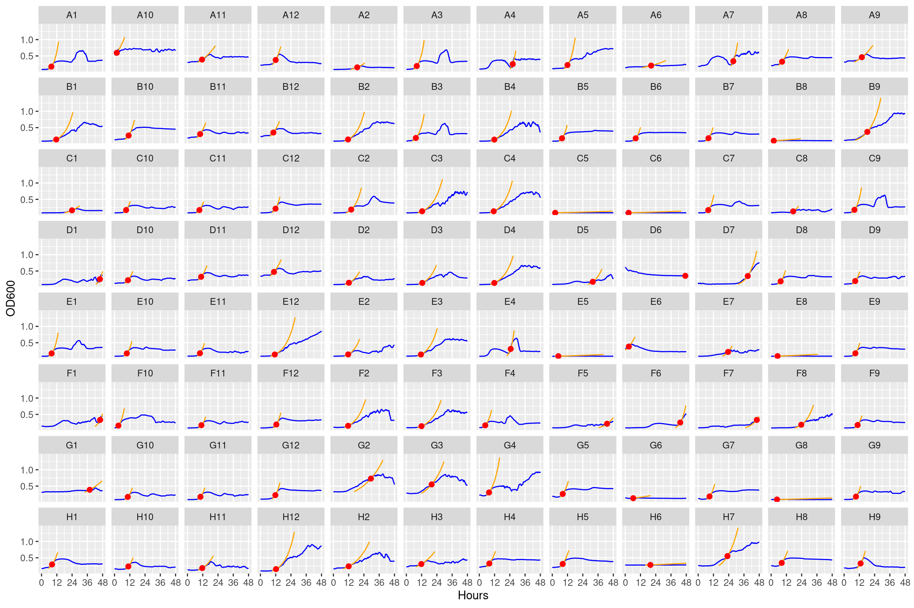
Figure 26: Growth curves for the Ciliate + Streptomycin conditions on Plate 2. Blue line is smoothed with a moving average window of 5 points. Orange is slope of max predicted growth rate from the first derivative of a smoothing spline. Red dot is hours and OD600 at which maximum growth rate is reached.
6.4.3 Plate 3
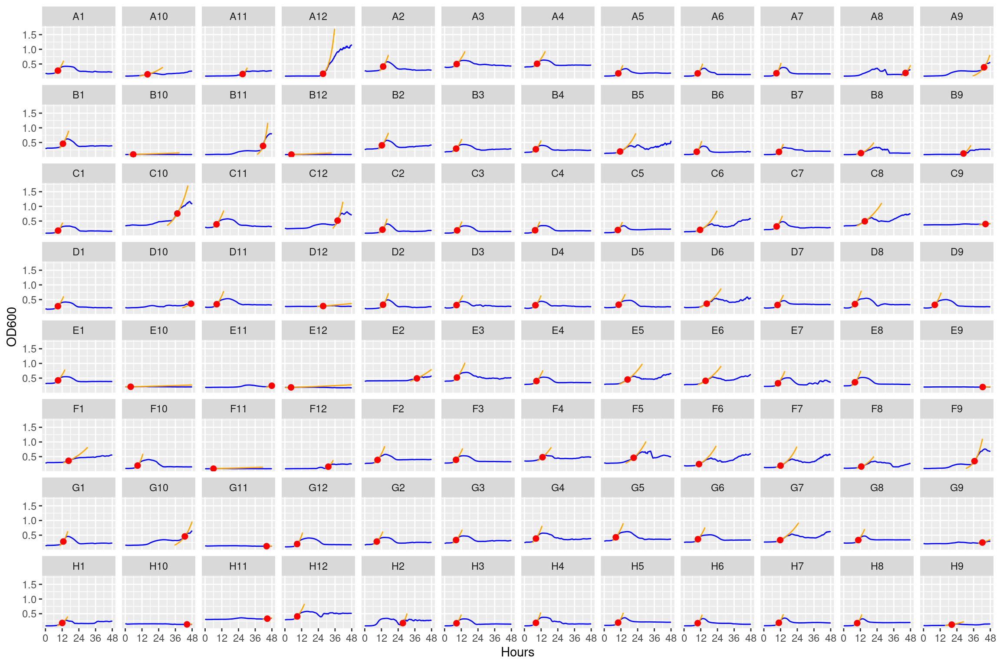
Figure 27: Growth curves for the Ciliate + Streptomycin conditions on Plate 3. Blue line is smoothed with a moving average window of 5 points. Orange is slope of max predicted growth rate from the first derivative of a smoothing spline. Red dot is hours and OD600 at which maximum growth rate is reached.
6.4.4 Plate 4
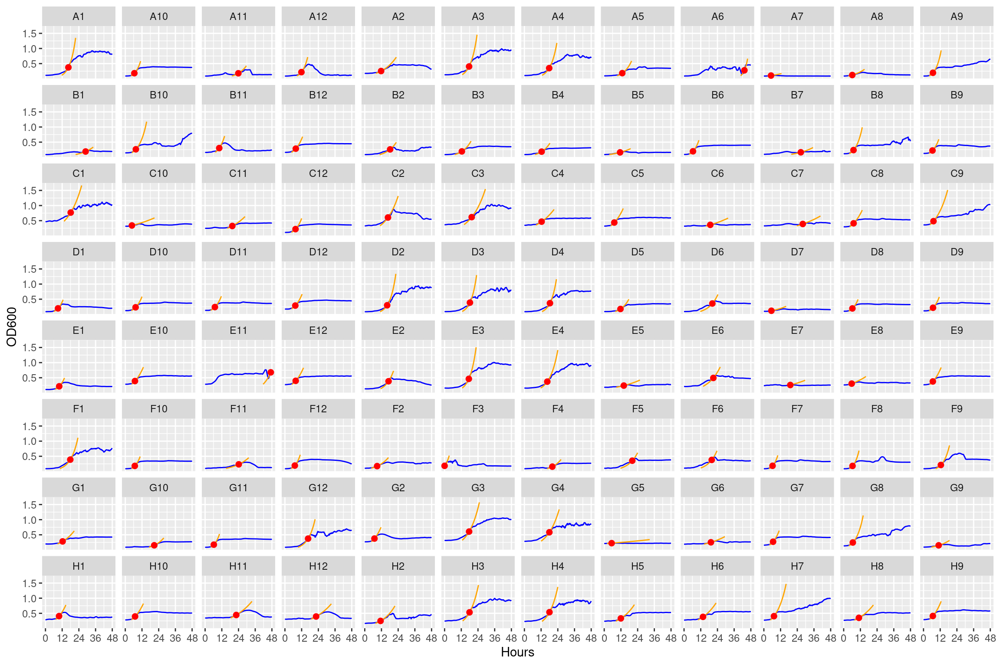
Figure 28: Growth curves for the Ciliate + Streptomycin conditions on Plate 4. Blue line is smoothed with a moving average window of 5 points. Orange is slope of max predicted growth rate from the first derivative of a smoothing spline. Red dot is hours and OD600 at which maximum growth rate is reached.
6.4.5 Plate 5
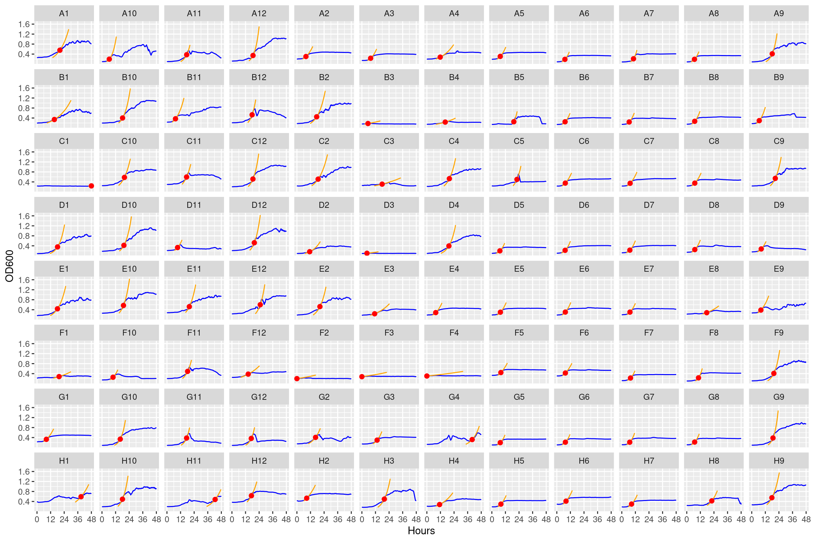
Figure 29: Growth curves for Ciliate + Streptomycin conditions on Plate 5. Blue line is smoothed with a moving average window of 5 points. Orange is slope of max predicted growth rate from the first derivative of a smoothing spline. Red dot is hours and OD600 at which maximum growth rate is reached.
6.4.6 Plate 6
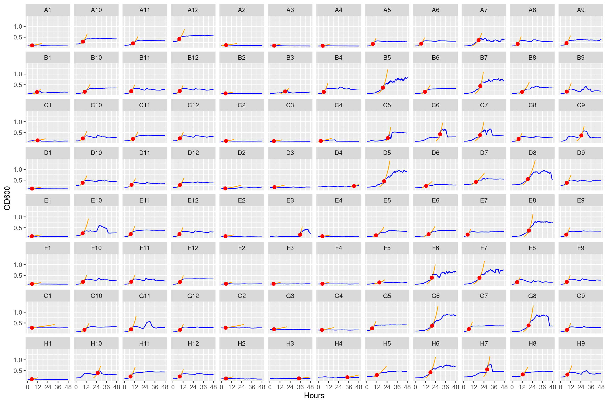
Figure 30: Growth curves for Ciliate + Streptomycin conditions on Plate 6. Blue line is smoothed with a moving average window of 5 points. Orange is slope of max predicted growth rate from the first derivative of a smoothing spline. Red dot is hours and OD600 at which maximum growth rate is reached.
6.4.7 Plate 7
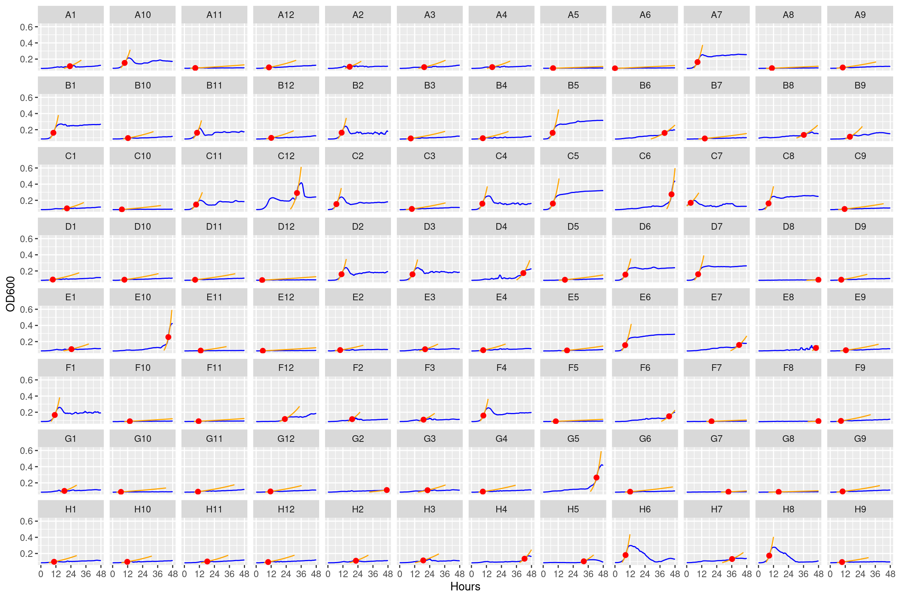
Figure 31: Growth curves for Ciliate + Streptomycin conditions on Plate 7. Blue line is smoothed with a moving average window of 5 points. Orange is slope of max predicted growth rate from the first derivative of a smoothing spline. Red dot is hours and OD600 at which maximum growth rate is reached.
6.4.8 Plate 8
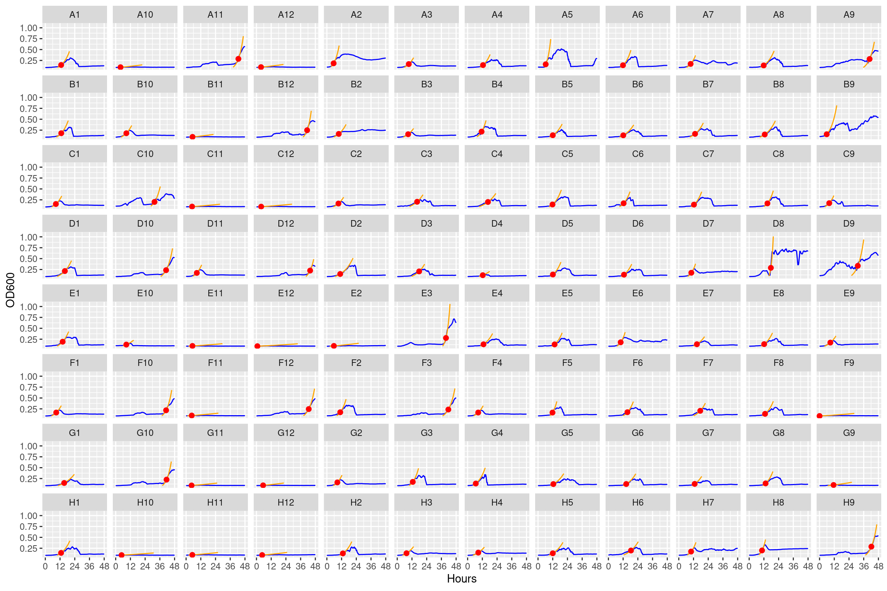
Figure 32: Growth curves for Ciliate + Streptomycin conditions on Plate 8. Blue line is smoothed with a moving average window of 5 points. Orange is slope of max predicted growth rate from the first derivative of a smoothing spline. Red dot is hours and OD600 at which maximum growth rate is reached.
Source Code
---title: "Predator and STR Clones monoculture growth workflow ii) AUC and growth rate estimate"author: "Shane Hogle"date: today---This notebook estimates growth rates by fitting non-parametric splines using the really nice [`growthrates`](https://github.com/tpetzoldt/growthrates) package. AUC is esimated using the [`DescTools`](https://andrisignorell.github.io/DescTools/) package.# SetupLoad required packages```{r}library(here)library(tidyverse)library(stringr)library(stringi)library(lubridate)library(fs)library(growthrates)library(DescTools)source(here::here("R", "utils_generic.R"))```Functions to simplify plotting later```{r}plotplate <-function(df, dfxy, unsmoothed=TRUE, predicted=FALSE, plate, rows, cols, page){ dffilt <- dplyr::filter(df, plate == {{ plate }}) xyfilt <-if (!is.null(dfxy)){ left_join(dfxy, distinct(dffilt, id, well, plate), by =join_by(id)) %>%drop_na()}ggplot(dffilt, aes(x = hours)) +list( ggplot2::geom_line(aes(y=OD600_smooth_avg), color ="blue"), if (unsmoothed) {ggplot2::geom_line(aes(y=OD600), color ="orange", lty =2)},if (predicted) {ggplot2::geom_line(aes(y=predicted), color ="orange")}, if (!is.null(dfxy)) {ggplot2::geom_point(data = xyfilt, aes(x = x, y = y), color ="red", size =2)}, ggplot2::labs(x ="Hours", y ="OD600"), ggplot2::scale_x_continuous(breaks =seq(0, 48, 12), labels =seq(0, 48, 12)), ggforce::facet_wrap_paginate(~ well, nrow = rows, ncol = cols, page = page), #scales = "free_y" ggplot2::theme(axis.text =element_text(size =9)) )}```# Read dataRead previously smoothed growth curves```{r}#| output: false#| warning: false#| error: falsegcurves_thin_sm <- readr::read_tsv(here::here(data_stp_cl, "gcurves_smoothed_thinned.tsv"))```# Spline based estimate for growth rateUsing the tool [`growthrates`](https://cran.r-project.org/web/packages/growthrates/index.html) to estimate mu_max. I have found this works a lot better the gcplyr and is more convenient than using another tool outside of R. Nonparametric estimate growth rates by spline is very fast. Fitting to a model takes more time resources. [Generally it is best to try multiple approaches and to visualize/check the data to make sure it makes sense.](https://www.frontiersin.org/journals/ecology-and-evolution/articles/10.3389/fevo.2023.1313500/full)```{r}gcurves_thin_sm <- gcurves_thin_sm %>%# make uniq idmutate(id =paste0(plate, "|", well))```Smoothing splines are a quick method to estimate maximum growth. The method is called nonparametric, because the growth rate is directly estimated from the smoothed data without being restricted to a specific model formula.From [growthrates documentation:](https://cran.r-project.org/web/packages/growthrates/growthrates.pdf)> The method was inspired by an algorithm of [Kahm et al. (2010)](https://www.jstatsoft.org/article/view/v033i07), with different settings and assumptions. In the moment, spline fitting is always done with log-transformed data, assuming exponential growth at the time point of the maximum of the first derivative of the spline fit. All the hard work is done by function smooth.spline from package stats, that is highly user configurable. Normally, smoothness is automatically determined via cross-validation. This works well in many cases, whereas manual adjustment is required otherwise, e.g. by setting spar to a fixed value \[0, 1\] that also disables cross-validation.## Fit```{r}#| eval: falseset.seed(45278)many_spline <- growthrates::all_splines(OD600_smooth_avg ~ hours | id, data = gcurves_thin_sm, spar =0.5)readr::write_rds(many_spline, here::here(data_stp_cl, "spline_fits"))``````{r}#| echo: false#| warning: falsemany_spline <- readr::read_rds(here::here(data_stp_cl, "spline_fits"))```## Results```{r}many_spline_res <- growthrates::results(many_spline)```## Predictions```{r}many_spline_xy <- purrr::map(many_spline@fits, \(x) data.frame(x = x@xy[1], y = x@xy[2])) %>% purrr::list_rbind(names_to ="id")many_spline_fitted <- purrr::map(many_spline@fits, \(x) data.frame(x@FUN(x@obs$time, x@par))) %>% purrr::list_rbind(names_to ="id") %>% dplyr::rename(hours = time, predicted = y) %>% dplyr::left_join(gcurves_thin_sm, by = dplyr::join_by(id, hours)) %>% dplyr::group_by(id) %>%# this step makes sure we don't plot fits that go outside the range of the data dplyr::mutate(predicted = dplyr::if_else(dplyr::between( predicted, min(OD600_smooth_avg), max(OD600_smooth_avg *1.5) ), predicted, NA_real_)) %>% dplyr::ungroup()```# AUC estimateCalculates AUC using `DescTools` package. The method empolyed is a simple [trapezoid rule](https://en.wikipedia.org/wiki/Trapezoidal_rule), where the growth curve is formed by connecting all points by a direct line (composite trapezoid rule).```{r}many_auc_res <- gcurves_thin_sm %>% dplyr::summarize(auc = DescTools::AUC(hours, OD600_smooth_avg),max_od =max(OD600_smooth_avg),min_od =min(OD600_smooth_avg),.by =c(plate, well))```# Combine and write output```{r}many_spline_res %>% dplyr::left_join(dplyr::distinct(dplyr::select(gcurves_thin_sm, id, plate, well)), by =join_by(id)) %>% dplyr::select(-id) %>% dplyr::relocate(y0:r2, .after="well") %>%left_join(many_auc_res, by =join_by(plate, well)) %>% readr::write_tsv(here::here(data_stp_cl, "auc_mumax_results.tsv"))```# Plot growth rate estimatesHere we will manually inspect the different growth curves. We will compile a list of the worst curves with the strangest features to exclude from downstream analysis (into a blacklist file).The subscripts at the ends of the plate contain information:1. The `_1` subscript is the "bact" condition with no additional treatment2. The `_2` subscript is the "bact_pred" condition which is a ciliate predator treatment3. The `_3` subscript is the "bact_strep" condition which has streptomycin4. The `_4` subscript is the "bact_pred_strep" condition which has both streptomycin and ciliates present## Bact conditions### Plate 1::: {#fig-01}```{r}#| fig.width: 12#| fig.height: 8#| echo: false#| warning: falseplotplate(many_spline_fitted, dfxy=many_spline_xy, unsmoothed=FALSE, predicted=TRUE, plate="A1_1", rows=8, cols=12, page=1)```Growth curves for the **bacteria only** conditions on **Plate 1**. Blue line is smoothed with a moving average window of 5 points. Orange is slope of max predicted growth rate from the first derivative of a smoothing spline. Red dot is hours and OD600 at which maximum growth rate is reached.:::### Plate 2::: {#fig-02}```{r}#| fig.width: 12#| fig.height: 8#| echo: false#| warning: falseplotplate(many_spline_fitted, dfxy=many_spline_xy, unsmoothed=FALSE, predicted=TRUE, plate="A2_1", rows=8, cols=12, page=1)```Growth curves for the **bacteria only** conditions on **Plate 2**. Blue line is smoothed with a moving average window of 5 points. Orange is slope of max predicted growth rate from the first derivative of a smoothing spline. Red dot is hours and OD600 at which maximum growth rate is reached.:::### Plate 3::: {#fig-03}```{r}#| fig.width: 12#| fig.height: 8#| echo: false#| warning: falseplotplate(many_spline_fitted, dfxy=many_spline_xy, unsmoothed=FALSE, predicted=TRUE, plate="A3_1", rows=8, cols=12, page=1)```Growth curves for the **bacteria only** conditions on **Plate 3**. Blue line is smoothed with a moving average window of 5 points. Orange is slope of max predicted growth rate from the first derivative of a smoothing spline. Red dot is hours and OD600 at which maximum growth rate is reached.:::### Plate 4::: {#fig-04}```{r}#| fig.width: 12#| fig.height: 8#| echo: false#| warning: falseplotplate(many_spline_fitted, dfxy=many_spline_xy, unsmoothed=FALSE, predicted=TRUE, plate="A4_1", rows=8, cols=12, page=1)```Growth curves for the **bacteria only** conditions on **Plate 4**. Blue line is smoothed with a moving average window of 5 points. Orange is slope of max predicted growth rate from the first derivative of a smoothing spline. Red dot is hours and OD600 at which maximum growth rate is reached.:::### Plate 5::: {#fig-05}```{r}#| fig.width: 12#| fig.height: 8#| echo: false#| warning: falseplotplate(many_spline_fitted, dfxy=many_spline_xy, unsmoothed=FALSE, predicted=TRUE, plate="A5_1", rows=8, cols=12, page=1)```Growth curves for **bacteria only** conditions on **Plate 5**. Blue line is smoothed with a moving average window of 5 points. Orange is slope of max predicted growth rate from the first derivative of a smoothing spline. Red dot is hours and OD600 at which maximum growth rate is reached.:::### Plate 6::: {#fig-06}```{r}#| fig.width: 12#| fig.height: 8#| echo: false#| warning: falseplotplate(many_spline_fitted, dfxy=many_spline_xy, unsmoothed=FALSE, predicted=TRUE, plate="A6_1", rows=8, cols=12, page=1)```Growth curves for **bacteria only** conditions on **Plate 6**. Blue line is smoothed with a moving average window of 5 points. Orange is slope of max predicted growth rate from the first derivative of a smoothing spline. Red dot is hours and OD600 at which maximum growth rate is reached.:::### Plate 7::: {#fig-07}```{r}#| fig.width: 12#| fig.height: 8#| echo: false#| warning: falseplotplate(many_spline_fitted, dfxy=many_spline_xy, unsmoothed=FALSE, predicted=TRUE, plate="A7_1", rows=8, cols=12, page=1)```Growth curves for **bacteria only** conditions on **Plate 7**. Blue line is smoothed with a moving average window of 5 points. Orange is slope of max predicted growth rate from the first derivative of a smoothing spline. Red dot is hours and OD600 at which maximum growth rate is reached.:::### Plate 8::: {#fig-08}```{r}#| fig.width: 12#| fig.height: 8#| echo: false#| warning: falseplotplate(many_spline_fitted, dfxy=many_spline_xy, unsmoothed=FALSE, predicted=TRUE, plate="A8_1", rows=8, cols=12, page=1)```Growth curves for **bacteria only** conditions on **Plate 8**. Blue line is smoothed with a moving average window of 5 points. Orange is slope of max predicted growth rate from the first derivative of a smoothing spline. Red dot is hours and OD600 at which maximum growth rate is reached.:::## Predator conditions### Plate 1::: {#fig-09}```{r}#| fig.width: 12#| fig.height: 8#| echo: false#| warning: falseplotplate(many_spline_fitted, dfxy=many_spline_xy, unsmoothed=FALSE, predicted=TRUE, plate="A1_2", rows=8, cols=12, page=1)```Growth curves for the **ciliate** conditions on **Plate 1**. Blue line is smoothed with a moving average window of 5 points. Orange is slope of max predicted growth rate from the first derivative of a smoothing spline. Red dot is hours and OD600 at which maximum growth rate is reached.:::### Plate 2::: {#fig-10}```{r}#| fig.width: 12#| fig.height: 8#| echo: false#| warning: falseplotplate(many_spline_fitted, dfxy=many_spline_xy, unsmoothed=FALSE, predicted=TRUE, plate="A2_2", rows=8, cols=12, page=1)```Growth curves for the **ciliate** conditions on **Plate 2**. Blue line is smoothed with a moving average window of 5 points. Orange is slope of max predicted growth rate from the first derivative of a smoothing spline. Red dot is hours and OD600 at which maximum growth rate is reached.:::### Plate 3::: {#fig-11}```{r}#| fig.width: 12#| fig.height: 8#| echo: false#| warning: falseplotplate(many_spline_fitted, dfxy=many_spline_xy, unsmoothed=FALSE, predicted=TRUE, plate="A3_2", rows=8, cols=12, page=1)```Growth curves for the **ciliate** conditions on **Plate 3**. Blue line is smoothed with a moving average window of 5 points. Orange is slope of max predicted growth rate from the first derivative of a smoothing spline. Red dot is hours and OD600 at which maximum growth rate is reached.:::### Plate 4::: {#fig-12}```{r}#| fig.width: 12#| fig.height: 8#| echo: false#| warning: falseplotplate(many_spline_fitted, dfxy=many_spline_xy, unsmoothed=FALSE, predicted=TRUE, plate="A4_2", rows=8, cols=12, page=1)```Growth curves for the **ciliate** conditions on **Plate 4**. Blue line is smoothed with a moving average window of 5 points. Orange is slope of max predicted growth rate from the first derivative of a smoothing spline. Red dot is hours and OD600 at which maximum growth rate is reached.:::### Plate 5::: {#fig-13}```{r}#| fig.width: 12#| fig.height: 8#| echo: false#| warning: falseplotplate(many_spline_fitted, dfxy=many_spline_xy, unsmoothed=FALSE, predicted=TRUE, plate="A5_2", rows=8, cols=12, page=1)```Growth curves for **ciliate** conditions on **Plate 5**. Blue line is smoothed with a moving average window of 5 points. Orange is slope of max predicted growth rate from the first derivative of a smoothing spline. Red dot is hours and OD600 at which maximum growth rate is reached.:::### Plate 6::: {#fig-14}```{r}#| fig.width: 12#| fig.height: 8#| echo: false#| warning: falseplotplate(many_spline_fitted, dfxy=many_spline_xy, unsmoothed=FALSE, predicted=TRUE, plate="A6_2", rows=8, cols=12, page=1)```Growth curves for **ciliate** conditions on **Plate 6**. Blue line is smoothed with a moving average window of 5 points. Orange is slope of max predicted growth rate from the first derivative of a smoothing spline. Red dot is hours and OD600 at which maximum growth rate is reached.:::### Plate 7::: {#fig-15}```{r}#| fig.width: 12#| fig.height: 8#| echo: false#| warning: falseplotplate(many_spline_fitted, dfxy=many_spline_xy, unsmoothed=FALSE, predicted=TRUE, plate="A7_2", rows=8, cols=12, page=1)```Growth curves for **ciliate** conditions on **Plate 7**. Blue line is smoothed with a moving average window of 5 points. Orange is slope of max predicted growth rate from the first derivative of a smoothing spline. Red dot is hours and OD600 at which maximum growth rate is reached.:::### Plate 8::: {#fig-16}```{r}#| fig.width: 12#| fig.height: 8#| echo: false#| warning: falseplotplate(many_spline_fitted, dfxy=many_spline_xy, unsmoothed=FALSE, predicted=TRUE, plate="A8_2", rows=8, cols=12, page=1)```Growth curves for **ciliate** conditions on **Plate 8**. Blue line is smoothed with a moving average window of 5 points. Orange is slope of max predicted growth rate from the first derivative of a smoothing spline. Red dot is hours and OD600 at which maximum growth rate is reached.:::## Streptomycin conditions### Plate 1::: {#fig-17}```{r}#| fig.width: 12#| fig.height: 8#| echo: false#| warning: falseplotplate(many_spline_fitted, dfxy=many_spline_xy, unsmoothed=FALSE, predicted=TRUE, plate="A1_3", rows=8, cols=12, page=1)```Growth curves for the **Streptomycin** conditions on **Plate 1**. Blue line is smoothed with a moving average window of 5 points. Orange is slope of max predicted growth rate from the first derivative of a smoothing spline. Red dot is hours and OD600 at which maximum growth rate is reached.:::### Plate 2::: {#fig-18}```{r}#| fig.width: 12#| fig.height: 8#| echo: false#| warning: falseplotplate(many_spline_fitted, dfxy=many_spline_xy, unsmoothed=FALSE, predicted=TRUE, plate="A2_3", rows=8, cols=12, page=1)```Growth curves for the **Streptomycin** conditions on **Plate 2**. Blue line is smoothed with a moving average window of 5 points. Orange is slope of max predicted growth rate from the first derivative of a smoothing spline. Red dot is hours and OD600 at which maximum growth rate is reached.:::### Plate 3::: {#fig-19}```{r}#| fig.width: 12#| fig.height: 8#| echo: false#| warning: falseplotplate(many_spline_fitted, dfxy=many_spline_xy, unsmoothed=FALSE, predicted=TRUE, plate="A3_3", rows=8, cols=12, page=1)```Growth curves for the **Streptomycin** conditions on **Plate 3**. Blue line is smoothed with a moving average window of 5 points. Orange is slope of max predicted growth rate from the first derivative of a smoothing spline. Red dot is hours and OD600 at which maximum growth rate is reached.:::### Plate 4::: {#fig-20}```{r}#| fig.width: 12#| fig.height: 8#| echo: false#| warning: falseplotplate(many_spline_fitted, dfxy=many_spline_xy, unsmoothed=FALSE, predicted=TRUE, plate="A4_3", rows=8, cols=12, page=1)```Growth curves for the **Streptomycin** conditions on **Plate 4**. Blue line is smoothed with a moving average window of 5 points. Orange is slope of max predicted growth rate from the first derivative of a smoothing spline. Red dot is hours and OD600 at which maximum growth rate is reached.:::### Plate 5::: {#fig-21}```{r}#| fig.width: 12#| fig.height: 8#| echo: false#| warning: falseplotplate(many_spline_fitted, dfxy=many_spline_xy, unsmoothed=FALSE, predicted=TRUE, plate="A5_3", rows=8, cols=12, page=1)```Growth curves for **Streptomycin** conditions on **Plate 5**. Blue line is smoothed with a moving average window of 5 points. Orange is slope of max predicted growth rate from the first derivative of a smoothing spline. Red dot is hours and OD600 at which maximum growth rate is reached.:::### Plate 6::: {#fig-22}```{r}#| fig.width: 12#| fig.height: 8#| echo: false#| warning: falseplotplate(many_spline_fitted, dfxy=many_spline_xy, unsmoothed=FALSE, predicted=TRUE, plate="A6_3", rows=8, cols=12, page=1)```Growth curves for **Streptomycin** conditions on **Plate 6**. Blue line is smoothed with a moving average window of 5 points. Orange is slope of max predicted growth rate from the first derivative of a smoothing spline. Red dot is hours and OD600 at which maximum growth rate is reached.:::### Plate 7::: {#fig-23}```{r}#| fig.width: 12#| fig.height: 8#| echo: false#| warning: falseplotplate(many_spline_fitted, dfxy=many_spline_xy, unsmoothed=FALSE, predicted=TRUE, plate="A7_3", rows=8, cols=12, page=1)```Growth curves for **Streptomycin** conditions on **Plate 7**. Blue line is smoothed with a moving average window of 5 points. Orange is slope of max predicted growth rate from the first derivative of a smoothing spline. Red dot is hours and OD600 at which maximum growth rate is reached.:::### Plate 8::: {#fig-24}```{r}#| fig.width: 12#| fig.height: 8#| echo: false#| warning: falseplotplate(many_spline_fitted, dfxy=many_spline_xy, unsmoothed=FALSE, predicted=TRUE, plate="A8_3", rows=8, cols=12, page=1)```Growth curves for **Streptomycin** conditions on **Plate 8**. Blue line is smoothed with a moving average window of 5 points. Orange is slope of max predicted growth rate from the first derivative of a smoothing spline. Red dot is hours and OD600 at which maximum growth rate is reached.:::## Predator + Streptomycin conditions### Plate 1::: {#fig-25}```{r}#| fig.width: 12#| fig.height: 8#| echo: false#| warning: falseplotplate(many_spline_fitted, dfxy=many_spline_xy, unsmoothed=FALSE, predicted=TRUE, plate="A1_4", rows=8, cols=12, page=1)```Growth curves for the **Ciliate + Streptomycin** conditions on **Plate 1**. Blue line is smoothed with a moving average window of 5 points. Orange is slope of max predicted growth rate from the first derivative of a smoothing spline. Red dot is hours and OD600 at which maximum growth rate is reached.:::### Plate 2::: {#fig-26}```{r}#| fig.width: 12#| fig.height: 8#| echo: false#| warning: falseplotplate(many_spline_fitted, dfxy=many_spline_xy, unsmoothed=FALSE, predicted=TRUE, plate="A2_4", rows=8, cols=12, page=1)```Growth curves for the **Ciliate + Streptomycin** conditions on **Plate 2**. Blue line is smoothed with a moving average window of 5 points. Orange is slope of max predicted growth rate from the first derivative of a smoothing spline. Red dot is hours and OD600 at which maximum growth rate is reached.:::### Plate 3::: {#fig-27}```{r}#| fig.width: 12#| fig.height: 8#| echo: false#| warning: falseplotplate(many_spline_fitted, dfxy=many_spline_xy, unsmoothed=FALSE, predicted=TRUE, plate="A3_4", rows=8, cols=12, page=1)```Growth curves for the **Ciliate + Streptomycin** conditions on **Plate 3**. Blue line is smoothed with a moving average window of 5 points. Orange is slope of max predicted growth rate from the first derivative of a smoothing spline. Red dot is hours and OD600 at which maximum growth rate is reached.:::### Plate 4::: {#fig-28}```{r}#| fig.width: 12#| fig.height: 8#| echo: false#| warning: falseplotplate(many_spline_fitted, dfxy=many_spline_xy, unsmoothed=FALSE, predicted=TRUE, plate="A4_4", rows=8, cols=12, page=1)```Growth curves for the **Ciliate + Streptomycin** conditions on **Plate 4**. Blue line is smoothed with a moving average window of 5 points. Orange is slope of max predicted growth rate from the first derivative of a smoothing spline. Red dot is hours and OD600 at which maximum growth rate is reached.:::### Plate 5::: {#fig-29}```{r}#| fig.width: 12#| fig.height: 8#| echo: false#| warning: falseplotplate(many_spline_fitted, dfxy=many_spline_xy, unsmoothed=FALSE, predicted=TRUE, plate="A5_4", rows=8, cols=12, page=1)```Growth curves for **Ciliate + Streptomycin** conditions on **Plate 5**. Blue line is smoothed with a moving average window of 5 points. Orange is slope of max predicted growth rate from the first derivative of a smoothing spline. Red dot is hours and OD600 at which maximum growth rate is reached.:::### Plate 6::: {#fig-30}```{r}#| fig.width: 12#| fig.height: 8#| echo: false#| warning: falseplotplate(many_spline_fitted, dfxy=many_spline_xy, unsmoothed=FALSE, predicted=TRUE, plate="A6_4", rows=8, cols=12, page=1)```Growth curves for **Ciliate + Streptomycin** conditions on **Plate 6**. Blue line is smoothed with a moving average window of 5 points. Orange is slope of max predicted growth rate from the first derivative of a smoothing spline. Red dot is hours and OD600 at which maximum growth rate is reached.:::### Plate 7::: {#fig-31}```{r}#| fig.width: 12#| fig.height: 8#| echo: false#| warning: falseplotplate(many_spline_fitted, dfxy=many_spline_xy, unsmoothed=FALSE, predicted=TRUE, plate="A7_4", rows=8, cols=12, page=1)```Growth curves for **Ciliate + Streptomycin** conditions on **Plate 7**. Blue line is smoothed with a moving average window of 5 points. Orange is slope of max predicted growth rate from the first derivative of a smoothing spline. Red dot is hours and OD600 at which maximum growth rate is reached.:::### Plate 8::: {#fig-32}```{r}#| fig.width: 12#| fig.height: 8#| echo: false#| warning: falseplotplate(many_spline_fitted, dfxy=many_spline_xy, unsmoothed=FALSE, predicted=TRUE, plate="A8_4", rows=8, cols=12, page=1)```Growth curves for **Ciliate + Streptomycin** conditions on **Plate 8**. Blue line is smoothed with a moving average window of 5 points. Orange is slope of max predicted growth rate from the first derivative of a smoothing spline. Red dot is hours and OD600 at which maximum growth rate is reached.:::